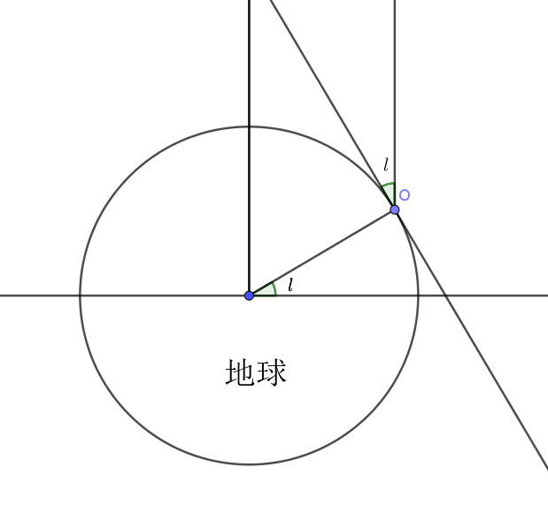
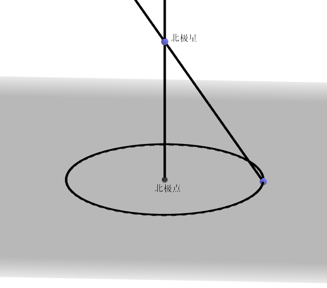

最近在B站偶然看到了一个介绍地平论的视频，这倒不是什么新鲜事，地平论也不是我第一次听说，不过下面称赞他们的独立思考能力和质疑精神的评论还是让我惊掉了下巴。地平论，顾名思义，主张地球不是个球体而是个圆盘，“地盘”的中心是北极，而南极洲是环绕圆盘外围的一圈冰墙。日月是在地盘上面绕转的两道光束，万有引力也不存在，地球在以$9.8m/s^2$的加速度向上加速运动，重力其实是地球系中的惯性力（草）。至于那些地球的照片等等，也都是伪造出来的。至于各国政府为什么要这么做，这大概隐藏着不可告人的惊 天 阴 谋吧（大草原）。

当然这种not even wrong的东西倒并不值得太认真对待，不过我们可以带着些“质疑精神”，试试仅凭自己的眼睛能不能反驳地平论。答案是可以的。我们知道不同纬度处看到的北极星的高度角是不同的，且高度角就等于地理纬度。（当然，这要基于地球是个球）

地平论无法解释为什么不同纬度看到的星空是不一样的。就算他们可以声称星星其实离我们非常近，以至于在地盘上不同位置观测就会有不同的高度角，但在有限大小的地盘上高度角一定有一个大于零的最小值。换言之，只要地平论者愿意花钱去赤道看看高度角为零的北极星，他这套理论自然会不攻自破。

当然反驳地平论本身并不是这篇文章主要要说的事。我们的确有方法仅凭自己的观测的推理证实地球是圆的，但真的有必要持怀疑精神到这种程度吗？或者说，即使我们没法靠自己证实地球是圆的，在拥有相同的信息的前提下，我们是否有依据选择一种理论而排斥另一种呢？
我们先来复习一下概率论。条件概率$P(A|B)$指的是事件B发生的前提下A发生的概率。显然我们有A和B同时发生和“B发生且B发生的前提下A发生”是一个意思，那么我们有：
稍微变换一下就有贝叶斯定理：
我们把它写得物理一点：
$M$代表模型，而$D$代表观测到的数据。这时贝叶斯公式中各项的意义就明了了：
- 左边的$P(M|D)$称作后验(posterior)，表示在分析了观测数据后我们得出的模型$M$正确的概率
- $P(D|M)$称作似然(likelihood)，代表模型$M$下预测的观测数据的分布
- $P(M)$称作先验(prior)，代表我们在观测之前已有的对模型的知识
- $P(D)$称作evidence，描述的是观测到数据$D$的概率，这一项作为归一化系数出现，在贝叶斯分析中通常不被考虑（因为我们感兴趣的是不同模型的后验，这时evidence总是个常数）。
一般情况下贝叶斯公式会被用作估计模型的参数的后验分布$P(M,\boldsymbol{\theta}|D)$，这时上面的$P(M)$可以看做$P(M,\boldsymbol{\theta})$把参数$\boldsymbol{\theta}$积分掉的边缘分布。
现在我们假设有了数据$D$，模型$M_1$和$M_2$都可以用于解释它。对$M_1$和$M_2$我们没有主观的偏好，因此取相同的先验$P(M_1)=P(M_2)$。它们的概率比(odds ratio)就成为：
如果模型$M_1$只有一个参数$\mu$，可以取$\mu$的先验为在$-\Delta_{\mu}/2$到$\Delta_{\mu}/2$之间的均匀分布。假设似然函数可以用中心为使似然取最大值的$\mu=\mu^0$，方差为$\sigma_\mu^2$的高斯分布来描述。一般情况下先验只能给出一个大致的范围，而数据能告诉我们更多关于参数的信息，也就是说$\sigma_{\mu}\ll\Delta_{\mu}$。我们就有：
这里$L^0(M_1)=\max(P(D|M_1,\mu))$。
注意到$\sigma_\mu/\Delta_\mu \ll 1$，这表明我们每在模型中增加一个独立参数，都会在$P(D|M)$中乘上一个远小于1的系数。如果$M_2$有两个独立参数$p$和$q$，那么：
如果$M_1$和$M_2$对数据的解释能力相近，即$L^0(M_1)\sim L^0(M_2)$，那么就有$O_{21}\ll 1$，我们就有很大把握选择$M_1$而拒绝$M_2$。
这一原则可以被简单地概括为，对同样能解释观测到的现象的模型，我们总是选择所作的假设更少的的那个。或者说，“若非必要，勿增实体”——没错，这正是大名鼎鼎的奥卡姆剃刀。
现在回到标题，为什么我们不该相信阴谋论？答案不证自明——阴谋论并没有提供更符合的解释，却凭空多出了相当多的假设，这也就使它的后验概率变得低得多。阴谋论最多做到自圆其说，但这并不是终点，为了质疑而产生的质疑也不会更能解释问题。